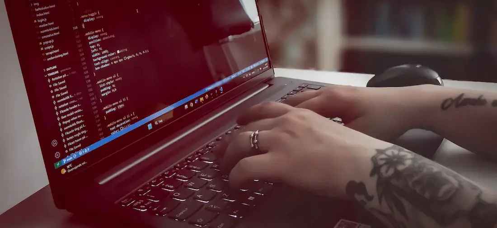
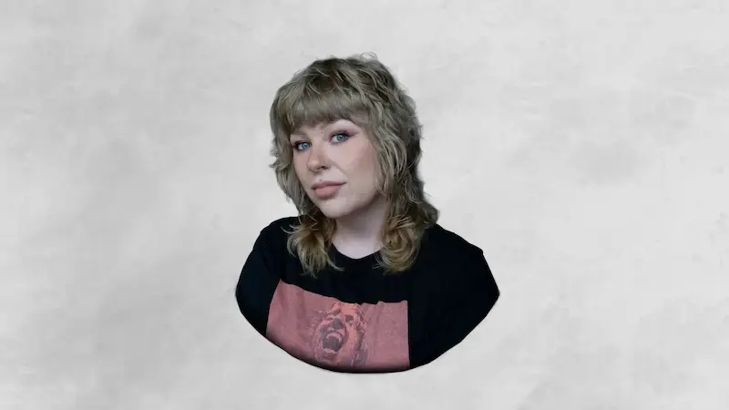
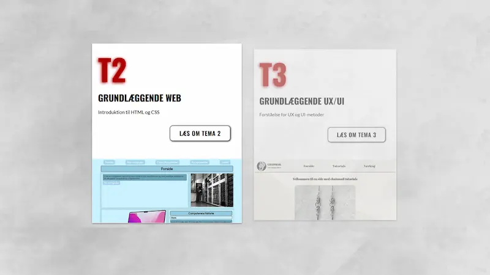

VELKOMMEN
VELKOMMEN
TIL MIN PORTFOLIO HJEMMESIDE


Hvem er jeg?
På siden “om mig” kan du læse om hvad jeg har lavet inden jeg startede på KEA og hvad der fik mig til at tage springet til at studere Multi Medie Design. Du kan også læse om hvad jeg har lært på mit første semester.
LÆS MERE HER

Hvad har jeg lavet?
På siden “Portfolio” kan du læse om de forskellige temaer jeg har arbejdet med i første semester. Du kan også tilgå de færdige tema websites og se proces dokumentation.
LÆS MERE HER